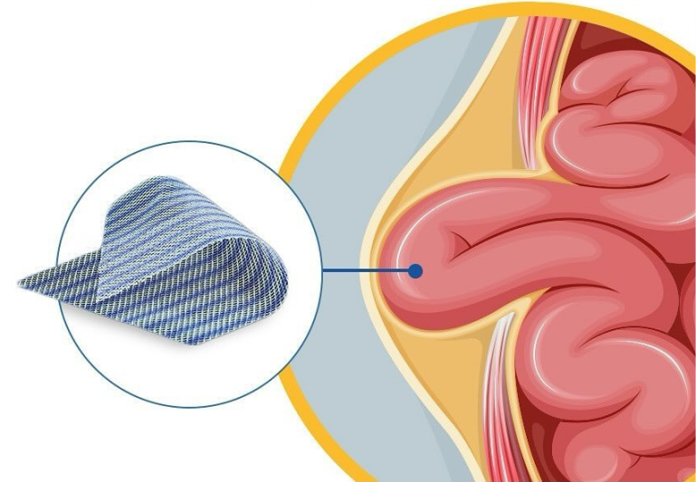

A type of mesh used to fill and close the hernia defect
Additional support provided by mesh to enhance hernia repair durability.
Reduction in the size of the mesh over time due to factors like pressure or body heat.
Surgical techniques that use small incisions and cause less tissue damage.
The incidence of disease or complications resulting from a medical condition.
Mesh made from multiple fibers or threads, offering enhanced strength and flexibility.
Defect involving both the muscle and connective tissue layer.
It is an anatomical space in the lower abdomen that allows the passage of nerves and blood vessels and is a common site for hernias.
Mesh that remains permanently in the body and is not absorbed over time.
Blockage of a passage or
vessel.
A fold of peritoneum
extending from the
stomach that can be
involved in hernia repairs.
Mesh placed on top of the defect and over the abdominal wall.
Traditional hernia repair through a large incision.
Hernia occurring near a stoma or artificial opening in the abdomen.
The outer lining of the peritoneal cavity.
Using a mesh patch to repair a hernia defect.
Formation of scar tissue within the peritoneal cavity.
The space within the abdomen lined by the peritoneum.
A defect or opening in the peritoneal lining.
The lining that covers the abdominal cavity and organs within it.
A synthetic mesh made from polypropylene, used in hernia repair.
